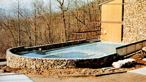
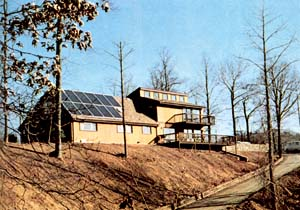
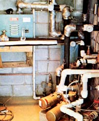
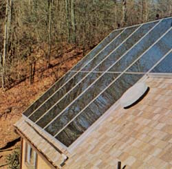
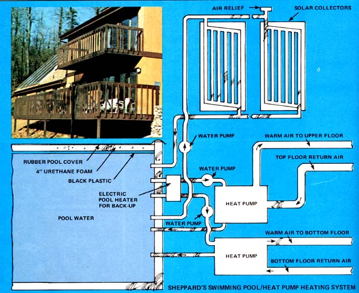

Everyone familiar with the current state of the solar energy field "knows" two things: [1] you must have at least one square foot of collector surface for every two square feet of house space that you heat with the sun, and [2]"real" solar heating systems built of all new materials and strictly to code have to cost at least $8.00 to $10.00 per square foot of heated floor space.
Everyone knows that. Everyone, that is, except for a few mavericks such as Bob Sheppard of Asheville, North Carolina. Because Bob-to get directly to the point-is (right now, in mid-January of the coldest winter seen in these parts in 100 years) 100% solarheating 3,000 square feet of brandspanking-new house up in the mountains of North Carolina. And he's doing it with just 400 square feet of flatplate solar panels. And his whole system-panels, plumbing, pumps ... everything he had to add "extra" to the residence to make its heating system work-cost him only $4,000!
Yes, Bob is cheating a little bit. Sheppard, you see, owns and operates Asheville Pool and Gunite. And, as a swimming pool contractor, he just naturally looks upon the 30,000-gallon man-made pond next to his new house as something that, sooner or later, he'd have added to the residence anyway.
Unlike almost everyone else in the world who has a $10,000 swimming pool in his or her back yard, however, Sheppard has not limited himself to thinking of his 30,000-gallon puddle only in terms of cool and refreshing summer dips. Instead Bob looked at the pool, scratched his head, and said, "Gee, I'll bet all that water-if it were covered with some insulation-would make a great winter storage unit for a solar heating system."
And (as you'll soon see) it does.
And the moral of this story is that every family in the country that already has a swimming pool tucked up close to its house-and there are tens upon tens of thousands of such families-just as surely has already made a major capital investment in what could be a very efficient solar heating system.
And the second moral of the story is that a heck of a lot more families that do not now have summer swimming pools could justify investing in them if they only realized that the money they'd be laying out could, at the same time, also go about twothirds of the way toward converting their homes to winter solar heat.
Sheppard's solar heating system works as well as it does for several reasons.
In the first place-just like the Granger brothers down in Greenville, South Carolina (see The Hello Thermics Solar-Heated and - Cooled House in MOTHER NO. 42)-Bob designed his home for solar heat. That is, the 3,000-square-foot dwelling is extremely well insulated. And almost all its windows '(double glazed) and other glassed surfaces (duo-pane sliding doors) face South ... thus acting as additional "free" passive thermal energy collectors during brisk winter days. The house, in short, was calculated from the beginning for snug cold weather comfort with only a minimum need for additional "extra" heat.
Second, although Sheppard uses very few flat-plate collectors in his setup, the ones he does use are the absolute best he could find: five 5 X 16-foot units glazed with tempered glass (no plastic here!) and manufactured by Solarmatic of Brandon, Florida. (The sixth collector-the one measuring 5 by 8-you see in the accompanying photos provides Bob's family with household hot water.)
Third, thanks to the extreme efficiency of the units (heat pumps) which deliver warmth from his heat reservoir (that 30,000-gallon pool) to his house, our inventive Asheville resident can maintain the temperature of the pool at a level much lower than the heat storage unit usually must be maintained in a solar heating system. And lower operating temperatures mean even more efficiency. (It's better, for example, to circulate a lot of water through a flat-plate collector quickly and heat it all just a little bit than to pump a mere trickle of water through the same collector and heat the smaller volume of fluid a lot.)
And in the fourth place, Sheppard's pool-set as it is in the ground-probably draws a certain amount of "free" Btu's directly from the earth itself.
The real "heart" of Bob's solar heating system is a pair of water-to-air heat pumps. (For an explanation of a heat pump's operation, see the sidebar that accompanies this article.)
The heat pumps extract warmth from Sheppard's insulated pool (the cement "swimmin' hole" was covered last fall with a sheet of plastic and four inches of urethane foam and then topped with a rubberized cover), "concentrate" those extracted Btu's and use them to heat air, and then blow that hot air into the Sheppard house.
The two heat pumps (each is rated at four tons of capacity), it has already been learned, can keep all 3,000 square feet of Bob's home quite comfortably warm ... even with the temperature of the water in the covered pool pulled to as low as 50° F. At 50° and below, of course, that water still contains a considerable number of Btu's ... and the pumps, if necessary, can extract a great many of them. But Sheppard feels that his heat exchangers have to work too hard to do their job when the storage unit's temperature falls below that point.
And that's why Bob has an ordinary "off the shelf" electric pool heater installed as a backup source of warmth between the tank of water and the heat pumps. During a long spell of unusually cold and overcast weather, the supplemental heater will simply kick in as soon as the temperature of the water in the pool is drawn down to 50°.
That's the theory anyway. In actual practice as of this writing (midJanuary 1977) that point has not yet been reached ... despite the fact that this has already been an unusually cold winter with temperatures down to zero and chill factors far below zero recorded for Bob's windswept, mountain-peak home.
One other feature of Bob Sheppard's solar heating system, perhaps, should also be stressed ... and that's the straightforward nature of the whole rig. There are no super-sophisticated computers to go haywire and no expensive antifreeze or heat transfer fluids to leak into Sheppard's pool and contaminate its water.
Ordinary thermostats control every circuit in the system and the same water that's stored in the pool is pumped through the rooftop collectors to pick up Btu's and through the heat pumps to transfer warmth on into the house as desired. (The water is automatically dumped from the collectors and into the pool each night during the winter to keep it from freezing.)
One of the really nice things about heat pumps is that, if their advertising can be believed, they're three to four times as efficient as electric heaters of the same rated capacity. And that's about the way Bob's units seem to be working out for him.
The local power company has installed special meters on all Sheppard's equipment and found that he's spending approximately $32 a month to run the system that heats his new house. This compares quite favorably with the $110 to $140 that people in the same area are spending every month to electrically heat homes of the same size.
And, oh yes, there's one other very attractive plus to the Sheppard heating system: it cools too ... in more ways than one!
During the summer, of course, the insulation can be pulled off Bob's heat storage tank to transform it into what it was originally: a refreshing 20 X 40 swimming pool.
But there's more. Is the house too hot? Then air-condition it by running those heat pumps backward to extract heat from the house and put it into the pool. And does that make the pool too warm? Then just circulate water from the ole swimmin' hole up through the rooftop collectors at night... and radiate those excess Btu's away into the cool nocturnal air.
Son of a gun. Bob Sheppard has an answer for everything. Or, at the very least, he's certainly found an economical way to enjoy a first-class, swimming pool life ... while having a minimum impact on the planet.
|
 |
 |
 |
|
 |
 |
|